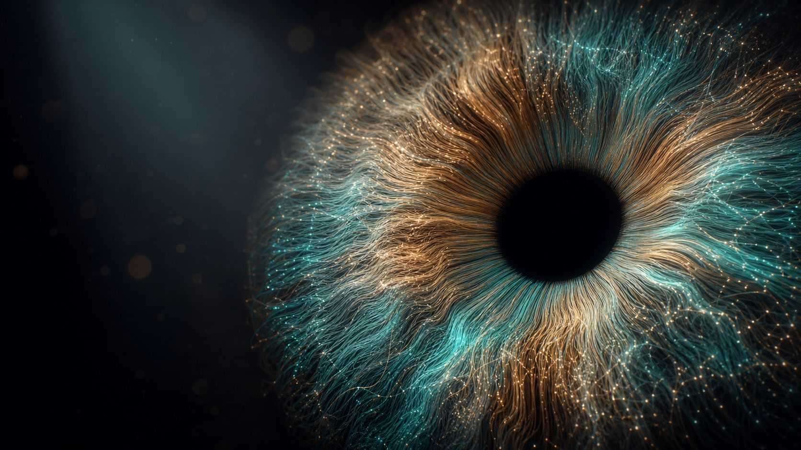

Open-Source Iris Recognition Libraries Compared: open-iris, OSIRIS, USIT and a Kotlin SDK

If you want to add iris recognition to a product without licensing a closed engine, there are a handful of open-source starting points. They differ more than their names suggest: some are research toolkits for running experiments on datasets, one is a modern Python pipeline built for servers, and few run on a phone. Here is how they compare, including our own SDK, so you can pick by where your code has to run.
The candidates
open-iris
Released by Worldcoin in 2023 under the MIT license. A Python pipeline with a neural-network segmentation model, normalization, Gabor-based encoding and Hamming-distance matching, packaged on PyPI. It is well engineered and well documented, and it is the obvious choice for a Python back end. It targets servers, and the segmentation model needs a runtime that is heavier than a phone app usually wants.
OSIRIS
The Open Source for IRIS reference system, written in C++ on OpenCV by researchers of the BioSecure network. It implements the classic chain of segmentation, normalization and Gabor encoding and is widely used as a baseline in papers. Good for reproducing published results; it is a research tool rather than a library for an application.
USIT
The University of Salzburg Iris Toolkit, a C++ collection of several segmentation, feature extraction and comparison algorithms. Its strength is breadth: you can compare methods side by side on the same images. Check its license before using it in a commercial product.
Masek's MATLAB implementation
Libor Masek's 2003 implementation of the Daugman approach is where many people first read iris recognition code. Useful for learning; not something to deploy.
Iriscan Biometric SDK
Our library, under GPL-3.0. Kotlin Multiplatform, so the same code runs on Android, iOS and the JVM: segmentation with separate pupil and iris circles, eyelid and reflection masks, log-Gabor encoding, masked Hamming matching for 1:1 and 1:N, image quality per ISO/IEC 29794-6 and ISO/IEC 19794-6 records. It is built to run on the device next to the scanner, offline.
Side by side
| Language | Runs on | Segmentation | License | Best for | |
|---|---|---|---|---|---|
| open-iris | Python | Servers | Neural network | MIT | Python back ends |
| OSIRIS | C++ | Desktop, servers | Classic | Open source (research) | Baselines in research |
| USIT | C++ | Desktop | Several algorithms | Check before commercial use | Comparing methods |
| Masek | MATLAB | Desktop | Classic | Academic code | Learning |
| Iriscan SDK | Kotlin | Android, iOS, JVM | Classic, tuned | GPL-3.0 | On-device apps |
How to choose
- Where must matching run? If images can go to a server, open-iris in Python is a strong option. If enrollment happens on a tablet in a village without a connection, you need something that runs on the device.
- Do you need 1:N? Verification against one record is easy with any of them. De-duplicating a register of hundreds of thousands needs a fast in-memory search and a threshold set for the gallery size; see iris de-duplication.
- Can you ship GPL code? If not, MIT-licensed open-iris, or a commercial license for our SDK, are the paths. Talk to us about the latter.
- Measure on your own images. Published accuracy depends on the dataset. Run any candidate on images from the scanner you will deploy. Our SDK includes the benchmark we use on CASIA-Iris-Interval, where it reaches an equal error rate of 4.2%.